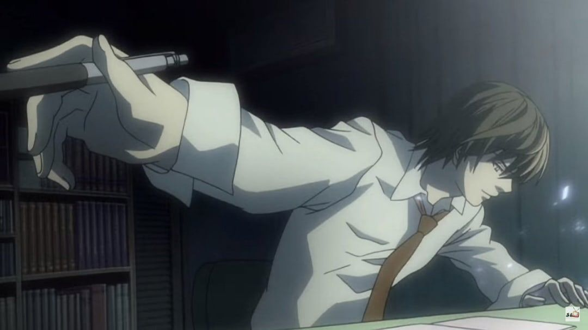
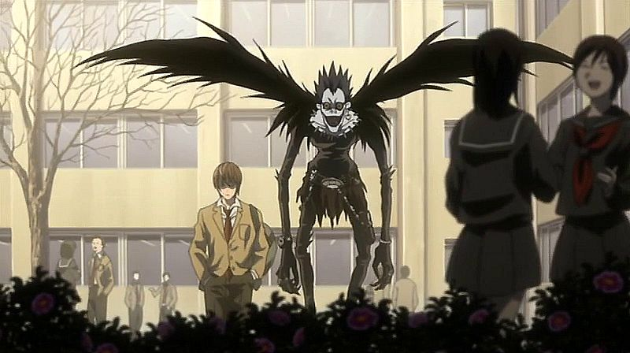
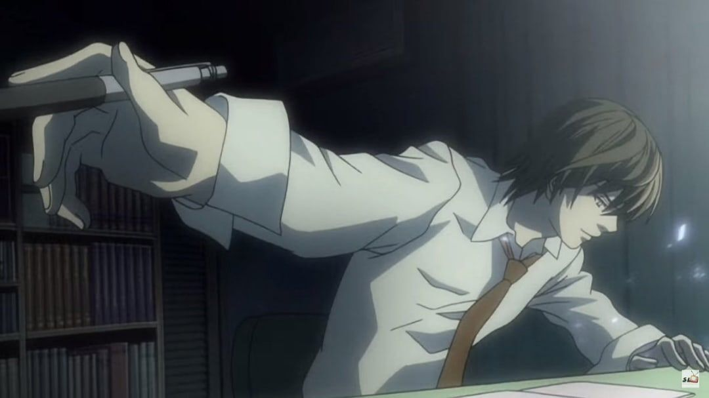
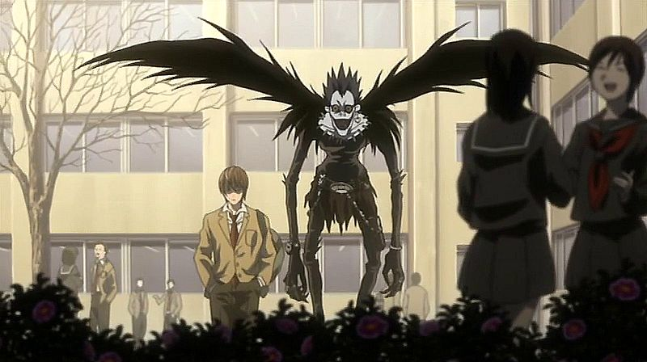

Death Note
Психология
Триллер
Детектив
Сюжет
Старшеклассник Лайт Ягами находит тетрадь, способную убивать любого, чьё имя в ней записано. Он решает очистить мир от преступников, но на его пути встаёт гениальный детектив L.
Почему стоит посмотреть
- Эталон психологического противостояния двух умов.
- Глубокие моральные вопросы о справедливости и власти.
- Одна из самых цитируемых историй в поп-культуре.
Кадры из сериала

 



Kira